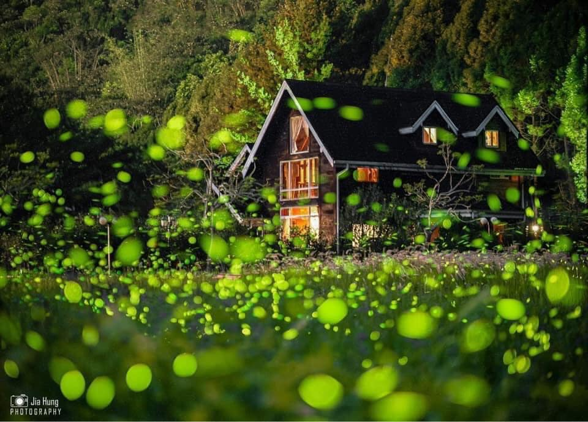

螢火蟲減少的原因？一.蜘蛛：螢火蟲成蟲的頭號天敵，張網捕捉的或是爬行地面獵捕的蜘蛛，都能輕易地捕獲螢火蟲。 |
|
|  |
|
如何守護螢火蟲的家？注意不要在非必要處架設人工光源，或者可以調整光源照射範圍、角度及光色（以紅色或橘色較不影響螢火蟲）以減少對螢火蟲的干擾。另外在清除野草時，一律改人工砍草的方式進行，萬萬不可以使用除草劑。事實上如果在除草工作由人工砍草方式進行，不僅不會影響原有螢火蟲數量，反而會使原有螢火蟲族群增加。其原因是經過除草行為，可以增加落葉量，如此亦是增加蝸牛的食物，蝸牛數量會因此而增加，如此一來，亦即增加螢火蟲幼蟲的食物，螢火蟲族群亦會因此而增加。 |
保護螢火蟲也是保護我們？螢火蟲飛舞的所在，就代表這地區的生態還算健康。所以保護螢火蟲，其實就是保護人類自己，會讓螢火蟲滅絕的棲地，其實對人類也是暗藏危險的。而且螢火蟲復育的關鍵，不只是人工繁殖技術，其實只要把棲地準備好，螢火蟲就會不請自來了，讓大自然來養螢火蟲。 我們可以向國際宣傳台灣的賞螢火蟲活動，傳達『生態台灣』的意象，當然，前提是我們必須珍惜環境，不輕易破壞生態，打造優質賞螢的環境，生態旅遊的推廣很值得更多農場、社區一起來參與。 |
|